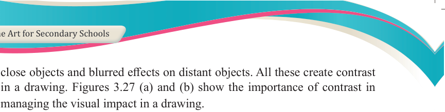
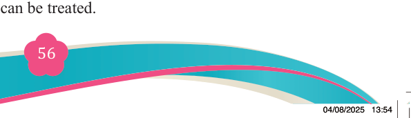
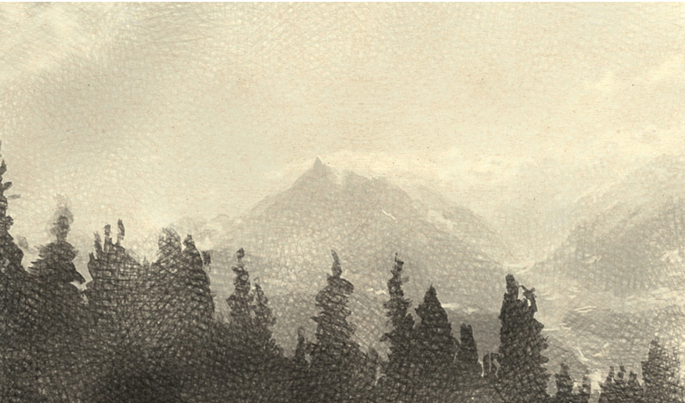
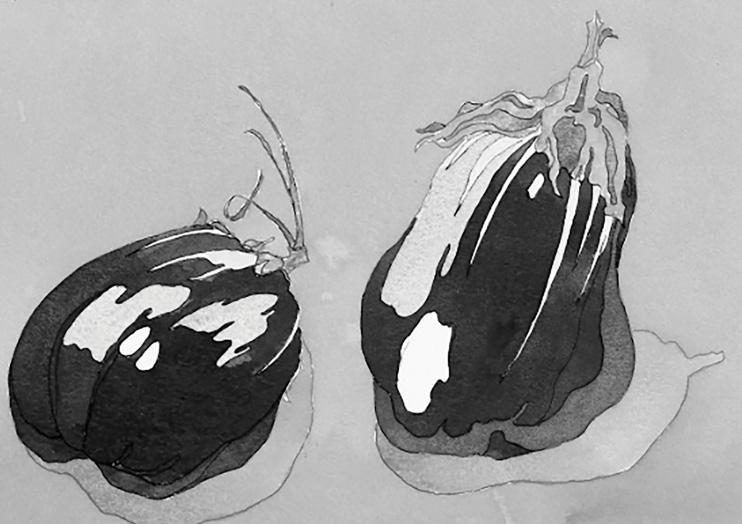
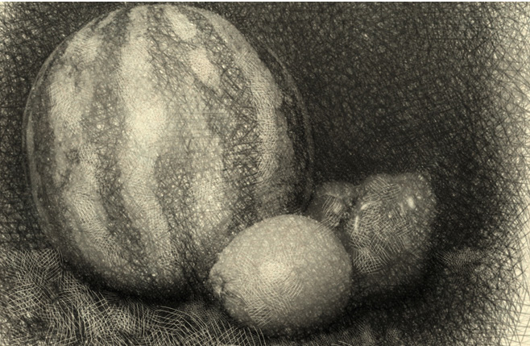

Fine Art for Secondary Schools

56

Student’s Book Form Two

close objects and blurred effects on distant objects. All these create contrast in a drawing. Figures 3.27 (a) and (b) show the importance of contrast in managing the visual impact in a drawing.


Figure 3.26: Atmospheric perspective
Source: https://cherrysocablog.com/project-4-perspective/


(a)
Source: http://www. g2.co
(b)
Figure 3.27: (a) and (b): contrasts between layers
(ii) Value
Value is one of the elements of art that refers to the quality of lightness and dark of certain shades or tones. Colour temperature tends to shift from warm
to cool colours, dark to light value and less saturated as it recedes into
distance. In an atmospheric perspective, the areas from a distance appear
lighter and the closer ones appear darker. This is because the objects gain
higher value when in distant position than they really are. Figure 3.28 shows
how distance and closeness can be treated.
04/08/2025 13:54